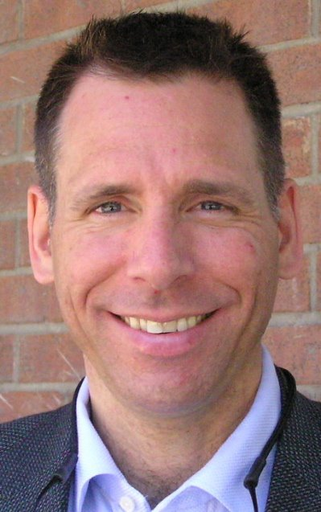

Nuclear Non-Proliferation and Arms Control: A Selective Right or a Doomsday Clock?
International conflict and instability are fuelled by the availability of arms. Nuclear proliferation is the increasing worldwide availability of nuclear weapons, nuclear knowledge, and nuclear materials such as enriched uranium or plutonium. Nuclear proliferation has long been a stated concern of politicians and nuclear arms control advocates who are seeking to control the distribution of these weapons of mass destruction. The Treaty on the Non-Proliferation of Nuclear Weapons is the single binding document which aims to prevent this spread and foster the peaceful uses of nuclear energy, and to further the goal of disarmament. However, with "rogue states" such as North Korea and Iran enriching uranium and testing missiles, is it possible to get everyone to agree to give up weapons research? To what extent are the present nuclear stockpiles safe? What if these weapons fall into the wrong hands? The clock is ticking.
—May-Anh Nguyen and Malik Ismail
Dr. Findlay spent thirteen years in the Australian diplomatic service, with postings in Tokyo, Mexico City and Geneva. He was a member of the Australian delegation to the Conference on Disarmament, as well as delegations to the UN General Assembly and UN Disarmament Commission in New York. Appointed in 1986 to the newly-established Peace Research Centre at the ANU as inaugural Foreign Affairs Disarmament Fellow, he later became Senior Fellow and acting head of the Centre for two years. This was followed by four years at the Stockholm International Peace Research Institute (SIPRI) in Sweden, where he established the institute's program on peacekeeping and regional security. From 1998 to early 2005 Dr. Findlay was Executive Director of the London-based Verification Research, Training and Information Centre (VERTIC), a non-governmental organization that focuses on the verification of international agreements, particularly in respect of arms control, disarmament, the environment and peace accords. Dr. Findlay was chair of the Independent Commission on the Verifiability of the Comprehensive Nuclear Test Ban Treaty in 2000.
Dr. Findlay commenced his appointment at Carleton University in February 2005 as a Professor at the Norman Paterson School of International Affairs. His new research centre, the CCTC, was formally launched at the end of March 2005. The Centre concerns itself with the theory and practice of compliance with international agreements generally, but with a focus on arms control, disarmament and nonproliferation. The CCTC partnered with CIGI on the Nuclear Energy Futures (NEF) project from 2006 to 2010 and is currently partnering CIGI in a new project on Strengthening and Reform of the International Atomic Energy Agency (IAEA).
Dr. Findlay is the author of numerous journal articles, book chapters and books. His most recent work is the series of final reports for the Nuclear Energy Futures project published in April 2010 on the nuclear energy revival to 2030 and its implications for safety, security and nonproliferation. His book on the subject, entitled Nuclear Energy and Global Governance, is to be published by Routledge UK in late 2010.
—Dr. Trevor Findlay, CIGI Chair of Global Security (BSIA) & Professor (University of Waterloo)
Steve Aplin grew up during the Cold War, and like millions of others lived under the ever-present threat of nuclear annihilation. In 1983 he volunteered for Operation Dismantle, a group dedicated to nuclear disarmament. He was encouraged when, only ten years later, Russia and the U.S. actually began to dismantle nuclear weapons. His interest in nuclear non-proliferation and disarmament increased when he became professionally involved in the civilian nuclear industry. Today he is a strong advocate of peaceful nuclear energy, and believes the civilian industry is humanity’s best hope for stemming proliferation. Mr. Aplin is Vice President, Energy and Environment, at The HDP Group, an Ottawa consultancy.
—Steve Aplin, Vice President of The HDP Group
—May-Anh Nguyen and Malik Ismail
Dr. Findlay spent thirteen years in the Australian diplomatic service, with postings in Tokyo, Mexico City and Geneva. He was a member of the Australian delegation to the Conference on Disarmament, as well as delegations to the UN General Assembly and UN Disarmament Commission in New York. Appointed in 1986 to the newly-established Peace Research Centre at the ANU as inaugural Foreign Affairs Disarmament Fellow, he later became Senior Fellow and acting head of the Centre for two years. This was followed by four years at the Stockholm International Peace Research Institute (SIPRI) in Sweden, where he established the institute's program on peacekeeping and regional security. From 1998 to early 2005 Dr. Findlay was Executive Director of the London-based Verification Research, Training and Information Centre (VERTIC), a non-governmental organization that focuses on the verification of international agreements, particularly in respect of arms control, disarmament, the environment and peace accords. Dr. Findlay was chair of the Independent Commission on the Verifiability of the Comprehensive Nuclear Test Ban Treaty in 2000.
Dr. Findlay commenced his appointment at Carleton University in February 2005 as a Professor at the Norman Paterson School of International Affairs. His new research centre, the CCTC, was formally launched at the end of March 2005. The Centre concerns itself with the theory and practice of compliance with international agreements generally, but with a focus on arms control, disarmament and nonproliferation. The CCTC partnered with CIGI on the Nuclear Energy Futures (NEF) project from 2006 to 2010 and is currently partnering CIGI in a new project on Strengthening and Reform of the International Atomic Energy Agency (IAEA).
Dr. Findlay is the author of numerous journal articles, book chapters and books. His most recent work is the series of final reports for the Nuclear Energy Futures project published in April 2010 on the nuclear energy revival to 2030 and its implications for safety, security and nonproliferation. His book on the subject, entitled Nuclear Energy and Global Governance, is to be published by Routledge UK in late 2010.
—Dr. Trevor Findlay, CIGI Chair of Global Security (BSIA) & Professor (University of Waterloo)
|  |
—Steve Aplin, Vice President of The HDP Group